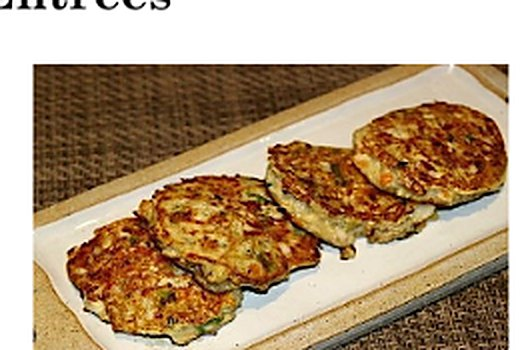
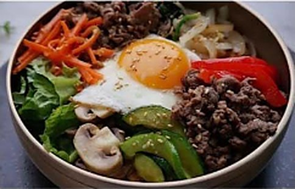
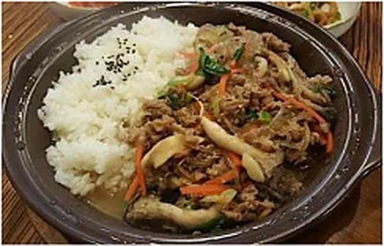
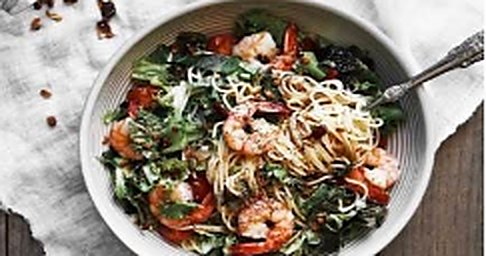
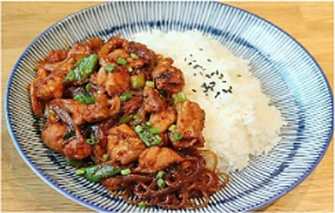
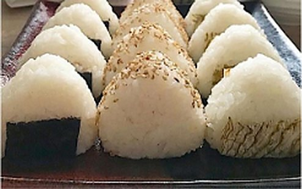

Mo-deum-jeon 모둠전
7,30 €4 pièces
Galettes de légumes poêlées, dorées et moelleuses.
La carte 메뉴
Tous nos plats sont préparés à la commande, avec des légumes marinés maison, des viandes halal et une large place laissée au végétarien. Prix nets, service compris.

10,50 €
Nouilles, bouillon épicé, légumes frais. Supplément viande : +0,50 €.
13,00 €
Ramen + boules de riz assaisonnées aux graines de sésame + kimchi.

12,50 €
4 à 6 légumes assaisonnés + tofu + œuf à la poêle + sauce au choix.

13,50 €option végane 13,00 €
4 à 6 légumes assaisonnés + œuf à la poêle + tofu + sauce au choix.
11,50 €
Bol de riz ou de nouilles au tofu et aux herbes.

11,50 €
Riz assaisonné à l'huile de sésame, carotte, concombre, omelette, pickle, épinards assaisonnés.

12,50 €option végane 12,00 €
4 à 6 légumes assaisonnés + bœuf + œuf à la poêle + sauce au choix.

12,00 €
Bœuf sauté aux légumes et à l'huile de sésame, avec riz ou nouilles.

12,00 €
Nouilles sautées au wok, crevettes et légumes, à la sauce du chef.

11,50 €
Poulet à la sauce piquante, avec riz ou nouilles.

13,00 €5 pièces
Riz + poulet frit, sauce maison et graines de sésame.

11,50 €
Riz au sésame, carotte, concombre, omelette, pickle, bœuf ou thon.

4,50 €par pièce
Riz assaisonné à l'huile de sésame, fourré au thon ou au bœuf.
13,50 €
4 à 6 légumes assaisonnés + œuf à la poêle + bœuf au sésame + sauce au choix.
Commande en ligne ou par téléphone — retrait sur place en dix minutes environ.